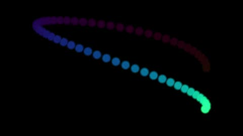

HomeAccueil / ExamplesExemples
Trails (HLSL, Buffer A)Traînées (HLSL, Buffer A)
Buffer A keeps the previous image and fades it: a moving dot leaves a trail. The Image pass only shows the buffer.Le Buffer A garde l'image précédente et l'atténue : un point mobile laisse une traînée. La passe Image n'affiche que le tampon.

CategoryCatégorie: Other languagesAutres langages - hlsl_traces.hlsl - 20 lineslignes - File on GitHubFichier sur GitHub
In the program: Examples, choose it, Add to the list. Or copy the code into a file next to the program and drop it on the window.Dans le programme : Exemples, choisissez-le, Ajouter à la liste. Ou copiez le code dans un fichier et glissez-le sur la fenêtre.
This example uses several passes: the files below go together.Cet exemple utilise plusieurs passes : les fichiers ci-dessous vont ensemble.
CodeCode
hlsl_traces.hlsl
// SPDX-License-Identifier: LicenseRef-ShaderToMP4-Proprietary
// Copyright (C) 2026 Patrick JAILLET. Tous droits reserves.
// en: Trails (HLSL, Buffer A) — Buffer A keeps the previous image and fades it: a moving dot leaves a trail. The Image pass only shows the buffer.
// fr: Traînées (HLSL, Buffer A) — Le Buffer A garde l'image précédente et l'atténue : un point mobile laisse une traînée. La passe Image n'affiche que le tampon.
// lang=hlsl
// iChannel0=bufferA
cbuffer Uniforms : register(b0)
{
float3 iResolution;
};
Texture2D iChannel0 : register(t1);
SamplerState smp : register(s1);
float4 main(float4 fragPos : SV_Position) : SV_Target
{
float2 uv = fragPos.xy / iResolution.xy;
return float4(iChannel0.Sample(smp, uv).rgb * 1.15, 1.0);
}hlsl_traces.bufferA.hlsl
// SPDX-License-Identifier: LicenseRef-ShaderToMP4-Proprietary
// Copyright (C) 2026 Patrick JAILLET. Tous droits reserves.
// lang=hlsl
// iChannel0=bufferA
cbuffer Uniforms : register(b0)
{
float3 iResolution;
float iTime;
};
Texture2D iChannel0 : register(t1);
SamplerState smp : register(s1);
float4 main(float4 fragPos : SV_Position) : SV_Target
{
float2 uv = fragPos.xy / iResolution.xy;
float2 c = 0.5 + 0.35 * float2(cos(iTime * 1.7), sin(iTime * 1.1));
float d = length((uv - c) * float2(iResolution.x / iResolution.y, 1.0));
float3 dotColor = (1.0 - smoothstep(0.02, 0.04, d)) * (0.5 + 0.5 * cos(iTime + float3(0.0, 2.0, 4.0)));
float3 prev = iChannel0.Sample(smp, uv).rgb * 0.96;
return float4(max(prev, dotColor), 1.0);
}